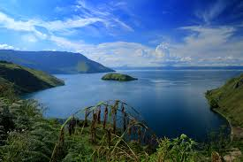

Temukan keindahan alam tropis dan kekayaan budaya yang membentang dari Aceh hingga Lampung. Jelajahi danau vulkanik, air terjun megah, dan lembah yang menakjubkan.

★★★★★ · Sumatra Utara
Danau vulkanik terbesar di dunia dengan pemandangan memukau dan udara sejuk. Di tengah danau terdapat Pulau Samosir yang kaya akan budaya Batak dan keramahan penduduk lokal.
Lihat destinasi
★★★★☆ · Sumatra Barat
Terletak di Kabupaten Lima Puluh Kota, lembah ini dikelilingi tebing batu setinggi 100 meter dan air terjun yang jernih. Tempat ideal bagi pecinta alam, panjat tebing, dan fotografi.
JLihat destinasi
★★★★★ · Karo, Sumatra Utara
Air terjun setinggi 120 meter ini menjadi salah satu ikon alam Sumatra Utara. Dari puncaknya, kamu bisa menikmati panorama indah Danau Toba dari ketinggian.
Lihat destinasiMulai petualanganmu menjelajahi gunung, danau, dan pantai di Sumatra bersama Experience Indonesia.
Jelajahi Lebih Banyak